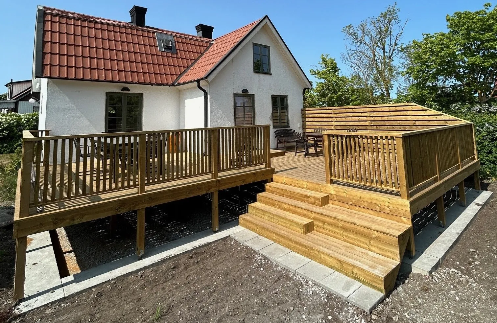
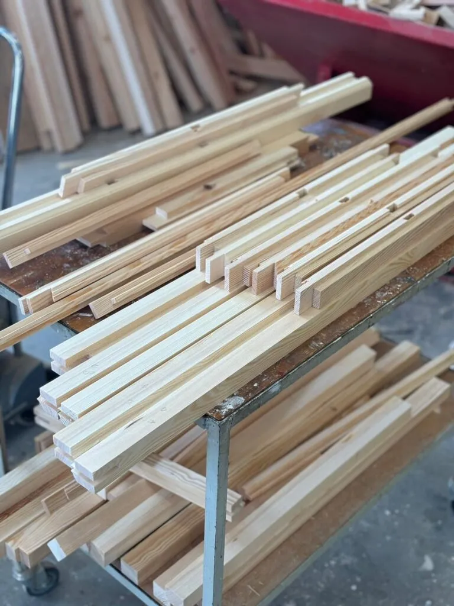
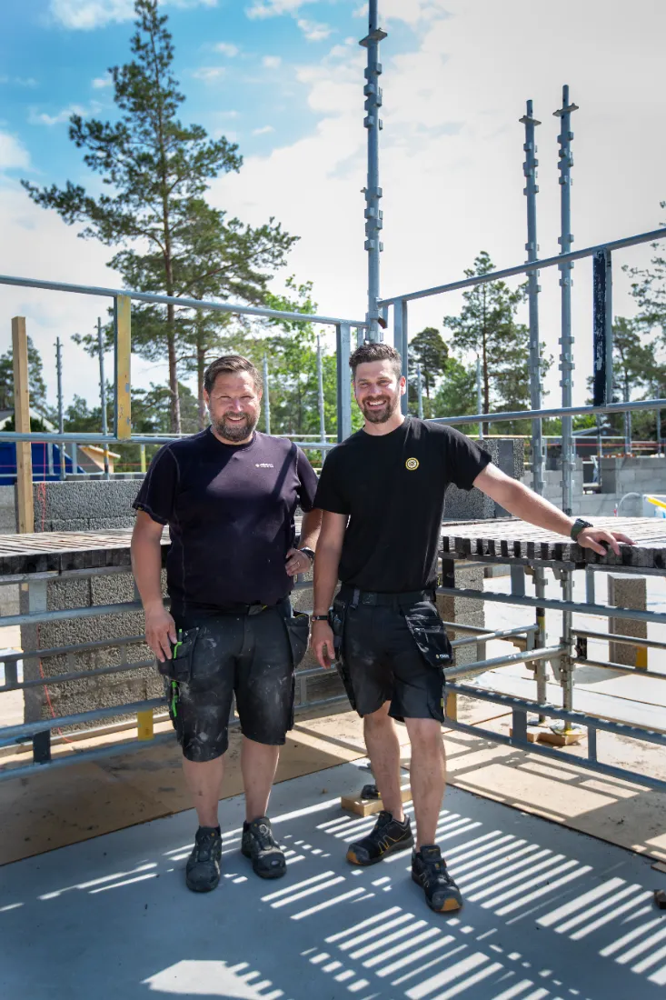

KIBBAS SNICKARSERVICE · GOTLAND
Hantverk med känsla.
Hela vägen hem.
Från platsbyggda detaljer till hela hus. Vi bygger, renoverar och förverkligar idéer för privatpersoner och företag på Gotland.
GOTLÄNDSKT HANTVERK SEDAN 1991På bilden: altan från vårt referensurval
DITT PROJEKT. VÅRT ENGAGEMANG.
Det stora sitter
också i detaljerna.
Ett nytt kök. En plats i solen. Ett hus som får nytt liv.
Hos Kibbas möts olika hantverkskunskaper. Vi hjälper dig att ta nästa steg, oavsett om du börjar med en färdig ritning eller en tanke som behöver få form.
Lär känna KibbasVAD VILL DU FÅ GJORT?
Brett kunnande.
Nära till hjälpen.

LÅT DIG INSPIRERAS
Arbeten som
talar för sig själva.

Specialsnickeri

Fönster & dörrar
GOTLAND ÄR VÅR HEMMAPLAN
Händerna bakom.
Känslan i jobbet.
Kibbas grundades 1991. Punktlighet, noggrannhet och ordning på arbetsplatsen är fortfarande viktiga utgångspunkter.
Möt oss på Kibbas
SECOND CHANCE
Mer kvar att ge.
En ny chans att göra nytta.
Överblivna byggprodukter, visningsexemplar och begagnat material. Låt det som redan finns bli en del av nästa projekt.
Upptäck Second ChanceINFÖR FÖRSTA SAMTALET
Från tanke
till nästa steg.
Vilka typer av projekt hjälper ni till med?
Vi arbetar med hus, entreprenad, kök, badrum, altaner, specialsnickerier, puts, trappor och fönster. Du hittar hela utbudet under Tjänster.
Arbetar ni både åt privatpersoner och företag?
Ja. Berätta vem du företräder och vad projektet gäller när du kontaktar oss.
Vad behöver ni för att lämna en offert?
En beskrivning av arbetet, platsen och önskad tidplan är en bra start. Skisser och bilder hjälper oss att förstå projektet.
Kan ni hjälpa med fönster som behöver service?
Ja. Vi har en särskild tjänst för service och reklamationsärenden för fönster och dörrar.